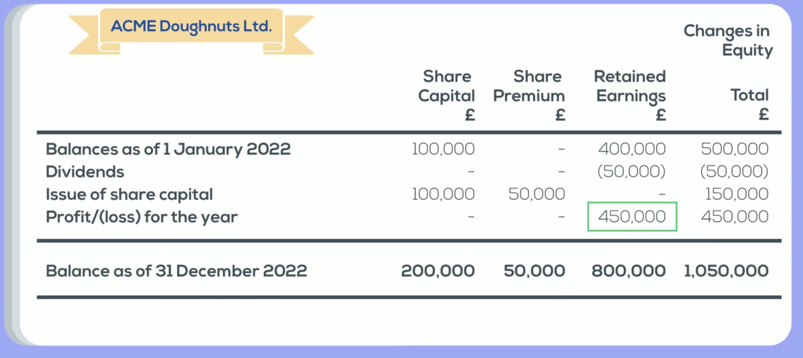

Preparing Statements
This page contains basic steps on how to prepare the core financial statements for sole-companies (not groups). The content in this section is a part of the Accounting Fundamentals (certificate level) for the ACA qualification.
Trial Balance
Ledger Accounts
For each transaction, we should list the debits and credits, and ensure they are equal. Then, we put each debit/credit entry into their respective accounts (like cash, inventory, etc.). These respective accounts are called T-accounts/ledger accounts. This process is called double entry accounting.
For example, imagine I invest £5,000 into the firm’s bank account. In double entry accounting, we know the debits and credits are:
- Dr. Cash (Asset) £5,000
- Cr. Equity (Equity) £5,000
Then, list the debits and credits in the correct accounts:
Equity
|
Cash (Asset)
|
Each transaction’s debits and credits should balance. However, each t-account individually does not need to be balanced.
- Note: for income statement accounts (revenue, purchases, expenses), the starting balance of all accounts at the beggining of the period should be reset to 0.
- For all other accounts (on the balance sheet), the starting balance of debits/credits should be carried over from the previous period.
Closing the Accounts
At the end of the year, we need to close the accounts. This differs between the income statement accounts (revenue, purchases, expenses) and balance sheet (everything else).
Say we have this revenue account (similar thing applies to the other income statement accounts):
| Debits | Credits |
|---|---|
£600 £300 |
We close this account by summing up the credits, and summing up the debits.
- Usually there is only entries on one side (debits or credits) for each account. Revenue only has credits, and expenses only have debits.
The total of the non-zero side is the closing balance. Remember to write the closing balance in the correct side (debits/credits) of their sum:
| Debits | Credits |
|---|---|
£600 £300 Closing: £900 |
This closing balance goes onto our trial balance (make sure you correctly put it in the debit/credit side), and the balance is refreshed to 0 debits/credits for the next period.
Say we have an account. Sum up each side of debits and credits.
Find the side (debit or credit) with the higher sum value. Put this at the bottom of both sides:
| Debits | Credits |
|---|---|
| £1000 | £600 |
| highest: £1000 | highest: £1000 |
Now, look at the side with the lower value. Find the “difference” between the lower and higher values, and put it on the side of the lower side. This difference is called the balance carried forward (c/f). Write it on the smaller side.
| Debits | Credits |
|---|---|
| £1000 | £600 |
- highest: £1000 |
balance c/f £400 highest: £1000 |
On the side with the larger value, copy the balance c/f value to that side on the very bottom, called the balance brought forward (b/f).
| Debits | Credits |
|---|---|
| £1000 | £600 |
- highest: £1000 balance b/f £400 |
c/f £400 highest: £1000 |
The balance b/f is the final balance of the account. This final balance (note if it is a debit or credit) will go into the trial balance, as well as be the starting debit/credit value for the next period’s account.
Trial Balance
A trial balance is simply a list of all accounts, and their closing balances. It takes the form of the following:
| Dr £ | Cr £ | |
|---|---|---|
| Cash | 3,000 | |
| Revenue | 4,000 | |
| Rent Expense | 3,000 | |
| Capital | 2,000 |
The trial balance should balance: the total number of debits and credits should be equal.
- Make sure you put the value of the account into the correct column (debit or credit).
- A quick way to check if the column is correct, is that revenue should always be in the debit column (you cannot have negative revenue, and debit increases revenue), and expenses/drawings should always be in the credit column.
This trial balance will help us create both the income statement, and the balance sheet.
Compiling Statements
Income Statement
To create the income statement from the trial balance, we just simply put the closing balances of the relevant accounts into the following form:
| Dr £ | Cr £ | |
|---|---|---|
| Revenue | £– | |
Cost of Sales* Gross Profit |
£– | |
Rent Expense Salary Other Operating Expense Operating Profit |
£– £– £– |
|
Finance Expense Profit Before Tax |
£– | |
Tax Expense Net Profit |
£– |
Cost of sales, or Cost of goods sold (COGS) is the cost of purchasing/producing all of the goods sold (inventory) that generated the revenue at the top of the income statement.
- For example, if you sold 5 shoes to generate the reported revenue, the COGS should be the cost of purchasing those 5 shoes in inventory.
To calculate COGS for a specific period (like a year), we take the formula:
COGS = opening inventory + purchases in period - closing inventory
This accounts for the goods that were not sold by the end of the period and remain in our inventory.
The bolded parts are not accounts, and should be left blank until all accounts are filled in. Then, to calculate the bolded metrics, sum up all the credits, and all the debits, above the bolded metric (all the way to the top). Then do the sum of credits minus the sum of debits.
Balance Sheet
To compile the balance sheet, simply list the remaining non-income statement accounts into their proper location. Remember that for assets, debit is positive and credit is negative. For liabilities and equity, debit is negative and credit is positive.
Non-Current Assets
Current Assets
Total Assets |
-
-
£– |
Equity
Non-Current Liabilities
Current Liabities
Total Equity + Assets |
-
-
-
£– |
For retained earnings, you calculate it as the closing balance of retained earnings from the last period + the net profit/loss (from the income statement). You should find that the accounting equation holds true. If it doesn’t, you have likely made some mistake.
Changes in Equity
Composition of Equity
For companies, the balance sheet has assets, liabilities, and equity. Equity has several accounts that commonly appear:
- Retained Earnings: The accumulation of profits/losses that were not paid out as dividends or withdrawn from the business. Each year, this figure is updated based on the net profit/loss from the income statement.
- Share Capital: When a company is established, the initial money invested by the founder is known as the share capital.
- For example, if you invest £100,000 into starting the business, your share capital is £100,000.
- This capital can be divided into units of equal size, known as shares. For example, if £100,000 share capital is divided into 100,000 shares, then each share is £1.
- This initial share price (ex. £1) is called the Par Value or Nominal Value, and will never change, no matter the market value of the share. This value is also noted by the value of an ordinary share.
- Share Premium: When the market price of shares changes, the share premium reflects this change from the initial share capital.
- Lets say the company needs £150,000, and found investors. They need to decide how many shares to issue, and at what price.
- Shares cannot be issued below the par value.
- Lets say the company decides to value each new share at £1.5, meaning they will issue 100,000 shares to get their funding needs.
- Since the share price is £1.5 compared to the par of £1, it is issued at a share premium of £0.5. Share premium is the value in excess of the par value.
- The remained of the £1 (par value) that is not the premium £0.5 is credited towards the share capital.
The statement of changes in Equity basically gives readers more information about how equity went from the starting balance to the ending balance.Since they issued 100,000 shares at a premium of £0.5, multiply together to get a share premium of £50,000.
Statement of Changes in Equity
The statement of changes in equity explains how the value of equity has changed during the year for a company.
- It lists the opening balance of each equity statement (retained earning, share capital, share premium).
- Then it shows changes to this equity over the time period (usually a year). These changes can include dividends paid out, issuing more shares at a premium, and profit/loss.
- The closing balance of the statement of changes in equity will equal the total equity in the end-of-period balance sheet.

Thus, the statement of changes in Equity basically gives readers more information about how equity went from the starting balance to the ending balance.
Cash Flow Statement
Cash Flow
Since the income statement (and net profit/loss) is recorded with accrual accounting, it does not record when cash is received/leaving a business. However, cash is still important as cash is needed to pay suppliers and liabilities.
The cash flow statement records how cash flows in and out of a business. It is divided into 3 parts:
- Cash flow from operating activities: this includes cash flows from core business operations, such as from sales, COGS, and operating expenses.
- Cash flow from investing activities: this includes cash flow from the purchase and disposal of assets.
- Cash flow from financing activities: this includes cash flows from liabilities/equity (loans, shares) and dividends.
There are two ways to prepare a cash flow statement.
- Direct method: this is basically recording and counting all the inflows and outflows of cash.
- Indirect method (more common): it uses different details from the income statement and balance sheet to work out the cash flow. Essentially, it is undoing the accruals/prepayments and payables/receivables to calculate cash flow.
Indirect Method
Cash flow from operating activities:
- Start with the profit before tax figure from the income statement.
- Add finance costs (so if you spend £X on finance costs, do + £X).
- Subtract finance income (so if you earn £X in finance income, do -£X).
- Subtract profits from disposal of non-current assets (so if you earn £X, do -£X, and if you lost £X, do +£X).
- Add depreciation expense (so if you spent £X on depreciation costs, do +£X).
- Add amoritsation expense (so if you spent £X on amoritsation, do +£X).
- Subtract change in inventory (so if inventory increased from last period, subtract. If inventory decreased from last period, add).
- Subtract change in trade receivables (so if receivables increased from last period, subtract. If receivables decreased from last period, add).
- Add change in trade payables (so if payables account increased from last period, add. If payables account decreased, subtract).
- Add change in accruals (so if accruals account increased from last period, add. If accruals account decreased, subtract).
- Subtract tax expense (so if you spent £X on tax, do -£X).
- Subtract interest paid (so if you spent £X on tax, do -£X).
Cash flow from investing activities
- Subtract amount spent on property, plant, and equipment (so if you spent £X, do -£X).
- Subtract amount spent on intangible assets (so if you spent £X, do -£X).
- Add proceeds from sale of property, plant, and equipment (so if you gained £X, do +£X).
Cash flow from financing activities
- Add proceeds from issue of shares (so if you gained £X, do +£X).
- Add change in borrowings.
- Subtract dividends paid (so if you paid £X, do -£X).